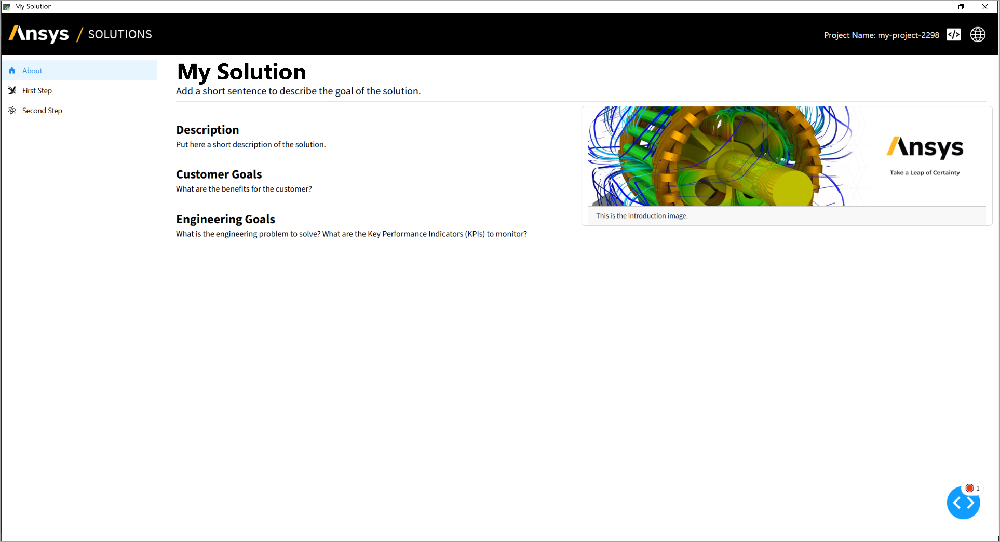
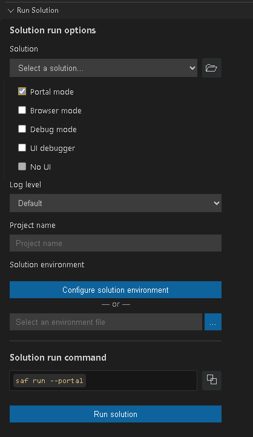

Run a solution on desktop#
You can run a solution locally on your desktop using any of the following methods:
Run method |
Description |
|---|---|
|
|
|
|
|
|
|
Tip
Start with SAF CLI or Solutions Manager for standard development workflows. Use SAF Desktop Orchestrator or GLOW CLI if you need specific customization.
Run using SAF CLI#
You can run a solution with the saf run command using either SAF CLI or Solutions Manager. This command starts the full solution stack (API, UI, OTel Dashboard, and optional services) by invoking SAF Desktop Orchestrator.
Solution execution modes#
When running a solution using SAF CLI (or Solutions Manager) you can open the solution in a desktop window, a web browser, or the SAF Portal.
Run in a desktop window#
Run a solution in a desktop window using SAF CLI:
saf run <solution-name>
For example:
saf run minimal-solution
Run a solution in a desktop window using Solutions Manager:
Open Visual Studio Code.
In the Activity Bar, click the Solutions Manager icon.
In the Solutions Manager pane, expand the Create Solution view.
In the Solutions Manager pane, expand the Run Solution view.

Provide the following values:
Select the solution you want to run.
You can either select an option from the list of available solutions or browse the solution folder of a different one.
Select your run options:
Ensure that Portal mode and Browser mode are not selected.
Select a log level:
The default log level is INFO. You can select a different log level if needed.
Enter a project name.
Enter the name of the project you want to run.
If needed, configure the solution environment.
See also
The Run Solution pane provides options for specifying the solution environment. For more information, see Environment variables and Environment file in the Environment variables page.
Run the solution.
Click the Run solution button. Alternatively, you can copy the command under Solution run command and run it in the terminal.
The solution UI opens in a desktop window.

Run in a web browser#
Run the solution in a web browser using SAF CLI:
saf run --browser
Run the solution in a web browser using Solutions Manager:
Open Visual Studio Code.
In the Activity Bar, click the Solutions Manager icon.
In the Solutions Manager pane, expand the Run Solution view.

Provide the following values:
Select the solution you want to install.
You can either select an option from the list of available solutions or browse the solution folder of a different one.
Select your run options:
Ensure that Browser mode is selected.
Select a log level:
The default log level is INFO. You can select a different log level if needed.
Enter a project name.
Enter the name of the project you want to run.
If needed, configure the solution environment.
See also
The Run Solution pane provides options for specifying the solution environment. For more information, see Environment variables and Environment file in the Environment variables page.
Run the solution.
Click the Run solution button. Alternatively, you can copy the command under Solution run command and run it in the terminal.
The solution UI opens in a web browser window.

Run from SAF Portal#
Run the solution from SAF Portal using SAF CLI:
saf run --portal
Run the solution from SAF Portal using Solutions Manager:
Open Visual Studio Code.
In the Activity Bar, click the Solutions Manager icon.
In the Solutions Manager pane, expand the Run Solution view.

Provide the following values:
Select the solution you want to install.
You can either select an option from the list of available solutions or browse the solution folder of a different one.
Select your run options:
Ensure that Portal mode is selected.
Select a log level:
The default log level is INFO. You can select a different log level if needed.
Enter a project name.
Ener the name of the project you want to run.
If needed, configure the solution environment.
See also
The Run Solution pane provides options for specifying the solution environment. For more information, see Environment variables and Environment file in the Environment variables page.
Run the solution.
Click the Run solution button. Alternatively, you can copy the command under Solution run command and run it in the terminal.
{kind=link}
The solution opens in the SAF Portal user interface. SAF Portal provides a project management interface for the solution, allowing you to create new projects, view existing projects, and manage project settings.

The saf run command#
When you run a solution with a UI using saf run, the following happens:
A project with a random name is automatically created (for example,
my-project-2569).A PyWebView window opens with the solution UI for that project.
SAF Portal is not launched by default.
Note
On Linux, the UI opens in a browser tab instead of PyWebView. To get the same behavior on Windows, use the
--browser option as described in Run in a web browser.
saf run options#
The saf run command has multiple command-line options. To see them all, run the following command:
saf run --help
Options are divided into UI and display options, Debugging options, and Port configuration categories, as detailed in the following sections.
UI and display options#
Option |
Description |
|---|---|
|
Opens the Portal UI instead of the solution UI, so you can manage multiple projects. |
|
Runs the solution without starting the UI server. |
|
Opens the UI in your default web browser instead of in a PyWebView window. |
|
Runs the solution UI using the Streamlit framework instead of Dash. |
Debugging options#
Option |
Description |
Default value |
|---|---|---|
|
Runs the solution in debug mode. Enables hot-reloading of code changes. |
Disabled |
|
Enables |
Disabled |
|
Sets the logging level. One of |
Not set |
|
Logs to files under |
Disabled |
Port configuration#
Option |
Description |
Default value |
|---|---|---|
|
Sets the port on which the Portal UI runs. |
Random available port |
|
Sets the port on which the Solution API runs. |
Random available port |
|
Sets the port on which the Solution UI runs. |
Random available port |
Project and environment options#
Option |
Description |
Default value |
|---|---|---|
|
Specifies the display name of the project to open or create. You cannot use this option when
SAF Portal is
running. If omitted, a project with a randomly generated name (for example, |
Not set |
|
Loads environment variables from this file. |
|
|
Disables automatic schema migration for projects created with an older solution version. |
Disabled |
saf run console output#
The console output for saf run provides all the information you need to interact with the running solution. It includes:
Solution name and debug status
Project name and display name
Solution API URL (with Swagger docs at
/docs)Solution UI URL
OTel Dashboard URL (logs and traces from each service)
Status of optional services (SAF Portal, PIM Light Server, additional services)
[...=GLOW API]- Telemetry enabled, using OTLP logging configuration for GLOW API
[...=GLOW UI]- Telemetry enabled, using OTLP logging configuration for GLOW UI
* Serving Flask app 'ansys.solutions.my_solution.ui.app'
* Debug mode: off
INFO - Solution: My Solution
INFO - Project:
- display name: my-project-2569
- name: projects/6800b09f77e87f3a18a39f0a
INFO - Solution API: http://127.0.0.1:49929/docs
INFO - Solution UI: http://127.0.0.1:49933/projects/6800b09f77e87f3a18a39f0a
INFO - OTel Dashboard: http://127.0.0.1:49930
INFO - SAF Portal: not launched
INFO - PIM Light Server: not launched
INFO - Additional services: not launched
INFO - Starting webview...
Run using SAF Desktop Orchestrator#
Alternatively, you can run a solution using SAF Desktop Orchestrator directly. This is useful for advanced users who want to customize the orchestration process.
The orchestrator is installed as a Python package in the virtual environment of the solution. To install it, run:
python -m ansys.saf.desktop.orchestrator \
--solution-main-module-name <package>.<submodule>.<main_module>
Replace <package>.<submodule>.<main_module> with the full Python module name of the module containing the glow_main call for your solution.
For example, to start the orchestrator for the solution whose main module is located at src/ansys/solutions/my_solution/main.py, run:
python -m ansys.saf.desktop.orchestrator \
--solution-main-module-name ansys.solutions.my_solution.main
The desktop.orchestrator command#
When you run a solution using SAF Desktop Orchestrator (without flags), the following happens:
A project with a random name is automatically created (for example,
my-project-2569).A PyWebView window opens with the solution UI for that project (on Windows). On other platforms, a browser tab opens instead.
SAF Portal is not launched by default.
On Windows, a splash screen displays while services start up.
desktop.orchestrator options#
SAF Desktop Orchestrator has multiple command-line options. To see them all without starting the orchestrator, run:
python -m ansys.saf.desktop.orchestrator --help
Options are divided into Required and Optional categories, as detailed in the following sections.
Required#
Option |
Description |
|---|---|
|
Specifies the full name of the Python module that contains the For example, the |
Optional#
Option |
Description |
Default value |
|---|---|---|
|
Opens the project selection UI instead of the solution UI. If the The Projects Dashboard path defaults to |
Disabled |
|
Runs the solution without starting the UI server. |
Disabled |
|
Opens the solution UI in the default web browser instead of a dedicated window. |
Disabled |
|
Runs the solution with Streamlit as the UI server. |
Disabled |
|
Specifies the display name of the project to open or create. You cannot use this option when SAF Portal is running. If you do not specify a display name, the orchestrator generates one in the format |
Not set |
|
Loads environment variables from this file. |
|
|
Disables automatic schema migration upgrades for old projects. |
Disabled |
|
Logs to files instead of showing the OTel Dashboard. You can also enable this option by setting the environment variable
|
Disabled |
|
Runs the full solution stack without opening the solution UI window, then shuts down immediately. Use this option to warm up or validate a solution without displaying it, for example during installer builds. |
Disabled |
Note
When SAF Portal is not started, the orchestrator always initializes a project,
regardless of whether a project display name is provided. If no display name
is provided, the project is named my-project-XXXXX, where XXXXX is a
random number.
desktop.orchestrator console output#
The console output displays the following information:
Debug status
Solution name
Project name and display name
Solution API/UI and OTel Dashboard URLs
Status of services:
Portal,PIM Light Server, and additional services
# Orchestrator output
[...=GLOW API]- Telemetry enabled, using OTLP logging configuration for GLOW API
[...=GLOW UI]- Telemetry enabled, using OTLP logging configuration for GLOW UI
* Serving Flask app 'ansys.solutions.my_solution.ui.app'
* Debug mode: off
INFO - Solution: My Solution
INFO - Project:
- display name: my-project-2569
- name: projects/6800b09f77e87f3a18a39f0a
INFO - Solution API: http://127.0.0.1:49929/docs
INFO - Solution UI: http://127.0.0.1:49933/projects/6800b09f77e87f3a18a39f0a
INFO - OTel Dashboard: http://127.0.0.1:49930
INFO - SAF Portal: not launched
INFO - PIM Light Server: not launched
INFO - Additional services: not launched
INFO - Starting webview...
Run using the GLOW CLI#
The GLOW CLI lets you run the solution API (backend) and the solution UI (frontend) independently. This is useful for advanced scenarios where you need fine-grained control over individual servers.
When to use the GLOW CLI#
Use the GLOW CLI when you need to:
Debug the API and UI independently
Start only one part of the solution
Control API and UI startup from separate terminals
Switch from the built-in CLI wrappers to lower-level production server commands
For most local development workflows, use SAF CLI or SAF Desktop Orchestrator instead.
How the GLOW CLI works#
A SAF solution has two web applications:
Solution API: The backend service that handles solution logic and data
Solution UI: The frontend web application that users open in the browser
You can start each application in one of two ways:
Standard: Use the GLOW CLI wrapper commands.
Advanced: Call the production server directly.
In practice, a common workflow is:
Start the solution API in one terminal.
Start the solution UI in a second terminal.
Open the solution UI URL reported in the terminal output.
Solution API execution#
To run the solution API, you can use the GLOW CLI or directly launch the app using a production server such as uvicorn.
Run using the GLOW API#
The glow_engine api command launches a simple uvicorn server with only a few parameters exposed.
Run the following command to start the solution that is inside the ansys.solutions.<solution_name> environment:
glow_engine api
This script automatically runs the following Python module: python -m ansys.saf.glow.cli api.
Note
This command automatically detects the entry point of the solution, which is expected to be ansys/solutions/<solution_name>/solution/definition.py.
If your solution has a different structure, use the --definition argument to specify the correct module using dot notation:
glow_engine api --definition tests.mocks.solutions.minimal_solution
The glow_engine api command#
When you run the solution API using glow_engine api, the following happens:
The REST API server starts and binds to the localhost and port specified (default:
127.0.0.1:5432).The API is available at
http://127.0.0.1:5432with interactive Swagger documentation at/docs.No project is automatically created. You must create projects using the API endpoints or other tools.
The UI server is not started. You must start it separately in another terminal using
glow_engine ui.
glow_engine api command options#
The glow_engine api command has multiple options. To see them all, run the following command:
glow_engine api --help
The following glow_engine api options are available:
Option |
Description |
Default value |
|---|---|---|
|
Binds the server socket to this host. |
|
|
Binds the server socket to this port. |
|
|
Specifies the host on which the product instance management system is running. |
|
|
Specifies the port on which the product instance management system is running. |
Not set |
|
Specifies the origins that are permitted to make cross-origin requests. |
Not set |
|
Specifies the solution definition module. |
Not set |
|
Specifies the solution module. |
Not set |
|
Loads environment variables from this file. If you do not specify a file, the command searches for |
Not set |
Run using a production server#
To get full control over the parameters used by the server, you can directly call a production server such as uvicorn
to start the solution API:
uvicorn ansys.saf.glow.api:app --host <host> --port <port>
Note
This command automatically detects the definition of the solution, which is expected to be ansys/solutions/<solution_name>/solution/definition.py.
If your solution has a different structure, set the environment variable GLOW_SOLUTION_DEFINITION to specify the correct module using dot notation.
Attention
You cannot use GLOW_API_HOST and GLOW_API_PORT to configure the host and port of the uvicorn server.
However, GLOW needs to know in which host and port it is running for its proper functioning and this information is not
retrieved automatically from uvicorn either. Therefore, you must configure both the uvicorn port and host, and
GLOW’s environment variables GLOW_API_PORT and GLOW_API_HOST to the same values.
See also
For more information on the options available to configure the server, see Settings in the official Uvicorn documentation.
Solution UI execution#
To run only the solution UI, you can use the GLOW CLI or directly launch the app using production servers such as gunicorn
(Linux) or waitress (Windows and Linux).
Run using the GLOW UI#
Run the following command to start the solution UI that is inside the ansys.solutions.<solution_name> environment:
glow_engine ui
This script automatically runs the following Python module: python -m ansys.saf.glow.cli ui.
Note
This command automatically detects the entry point of the solution, which is expected to be ansys/solutions/<solution_name>/main.py.
If your solution has a different structure, use the --solution argument to specify the correct module using dot notation:
glow_engine ui --solution tests.mocks.solutions.minimal_solution
The glow_engine ui command#
When you run the solution UI using glow_engine ui, the following happens:
The Dash UI server starts and binds to the localhost and port specified (default:
127.0.0.1:5433).The UI is available at
http://127.0.0.1:5433and is ready for browser access.The UI connects to a solution API server. If no API URL is specified, the UI starts but will display connection errors until the API is running.
No project is automatically created. Projects must be managed by creating them first via the API or another method.
glow_engine ui options#
The glow_engine ui command has multiple options. To see them all, run the following command:
glow_engine ui --help
The following glow_engine ui options are available:
Option |
Description |
Default value |
|---|---|---|
|
Binds the server socket to this host. |
|
|
Binds the server socket to this port. |
|
|
Specifies the URL of the solution API server. |
Not set |
|
Specifies the URL of the Portal UI. |
Not set |
|
Specifies the solution module. |
Not set |
|
Loads environment variables from this file. If you do not specify a file, the command searches for |
Not set |
Run using a production server#
To get full control over the parameters used by the server, you can directly call it using a production server such as gunicorn (Linux)
or waitress (Windows and Linux) to start the solution UI:
gunicorn -b <host>:<port> ansys.saf.glow.ui:app
waitress-serve ansys.saf.glow.ui:app --port <port> --host <host>
Note
This command automatically detects the definition of the solution, which is expected to be ansys/solutions/<solution_name>/solution/definition.py,
and the solution UI application, which is expected to be ansys/solutions/<solution_name>/ui/app.py.
If your solution has a different structure, set the environment variables GLOW_SOLUTION_DEFINITION and GLOW_UI_MODULE to specify
the correct modules using dot notation:
export GLOW_SOLUTION_DEFINITION=tests.mocks.solutions.minimal_solution.solution.definition
export GLOW_UI_MODULE=tests.mocks.solutions.minimal_solution.ui.app
Attention
You cannot use GLOW_UI_HOST and GLOW_UI_PORT to configure the host and port of the gunicorn/waitress
server. However, GLOW needs to know in which host and port it is running for its proper functioning and this information is
not retrieved automatically from gunicorn/waitress either. Therefore, you must configure both the gunicorn/waitress
port and host, and GLOW’s environment variables GLOW_UI_PORT and GLOW_UI_HOST to the same values.
If you have used non-default values to configure the host and port of the API, you must also configure the environment
variable GLOW_API_URL. Check Environment variables for more details about this environment variable.
Run an archived solution#
You can run an archived solution using the Solution App Starter utility (solution-app-starter script). It provides a convenient, one-click method for launching archived solutions, making it easier to share, test, and validate solution packages.
To run an archived solution using the Solution App Starter:
saf execute <solution_name> "solution-app-starter <archived_solution>"
The solution UI opens in a desktop window.
The solution-app-starter script#
When you run the solution-app-starter script, it performs the following actions:
Launches the solution: Starts the solution using GLOW without launching SAF Portal or other optional services.
Creates a new project: Generates a new project with a unique, randomly assigned name.
Opens the solution UI: Opens the solution user interface for the newly created project.
Each execution uses a temporary directory for data storage and creates a new project instance. This ensures that every run starts in a clean, isolated environment.
The solution-app-starter script cleans the temporary directory when execution completes.
Note
To ensure the extracted solution can be correctly imported and executed, the temporary directory is added to the beginning (position 0) of Python’s module search path (sys.path), and the PYTHONPATH environment variable is set to contain the whole sys.path.
solution-app-starter console output#
The console displays the same information as when calling the ansys.saf.desktop.orchestrator module. The temporary data storage directory is logged with the format APPDATA set to. For example:
solution_app_starter:Extracting solution to temp directory C:\Users\test\AppData\Local\Temp\tmpfg0yp17z...
solution_app_starter:Added solution directory C:\Users\test\AppData\Local\Temp\tmpfg0yp17z\src to PYTHONPATH.
solution_app_starter:Loading solution in file C:\Users\test\AppData\Local\Temp\tmpfg0yp17z\src\ansys\solutions\my_archived_solution\main.py
solution_app_starter:APPDATA set to C:\Users\test\AppData\Local\Temp\tmp6ltewxeg.
solution_app_starter:Starting project with display_name 673b7cec-da45-48ef-a03a-34deb21cc7b4...
_telemetry.instrumentor]- Orchestrator logging to C:/.../logs/orchestration/log_zkdrn748.log
=GLOW UI]- GLOW UI logging to C:/.../logs/ui_server/log_m86ikn60.log
=GLOW API]- GLOW API logging to C:/.../logs/api_server/log_0fc8b2sr.log
* Serving Flask app 'ansys.solutions.my_archived_solution.ui.app'
* Debug mode: on
Solution: My Solution
Project:
- display name: my-project-8915
- name: projects/67d2e4ae13ae5d580c08b1e4
Solution API: http://127.0.0.1:61925/docs
Solution UI: http://127.0.0.1:61926/projects/67d2e4ae13ae5d580c08b1e4
SAF Portal: not launched
PIM Light Server: not launched
Additional services: not launched
See also
For instructions on solution archiving, see Archive a solution.